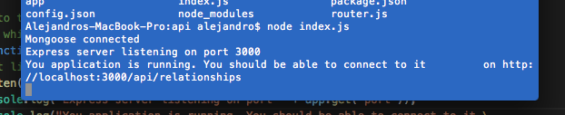
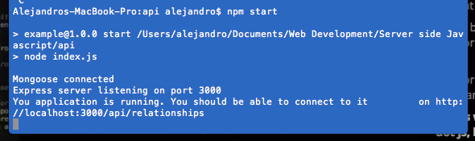
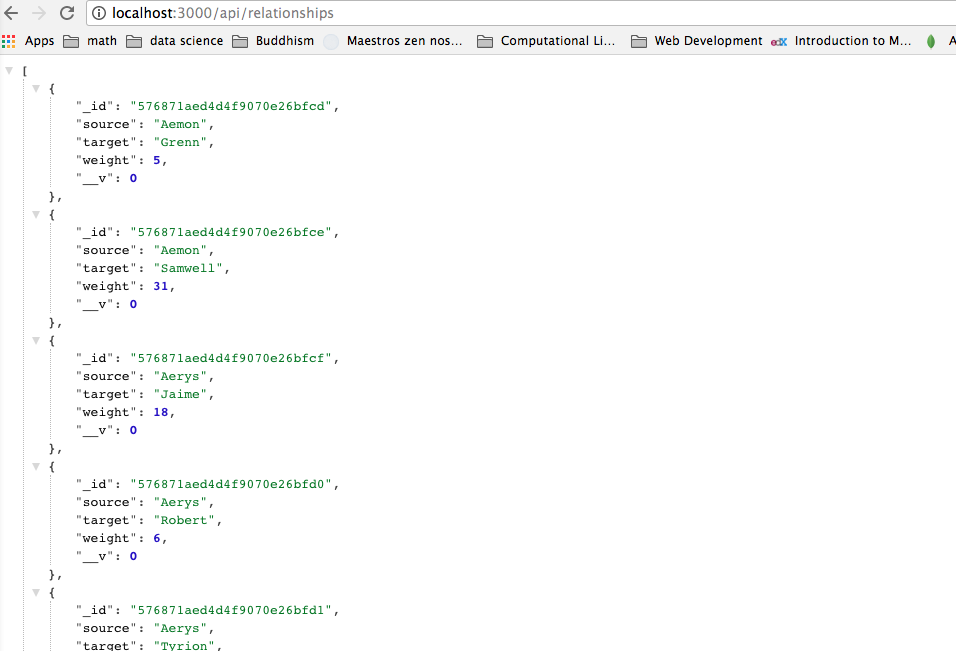

What we see is that in the very first two lines we have two requirements: the first requirement is express. It's a dependency we have just seen it in a package dot JSON and we have just installed it with NPM install. The second thing that we require is database and this is actually a file and we see it from this ./ at the beginning of the name. We don't have to specify the extension, which in this case is js, as we see here, simply because Node is able to automatically get the extension if there is only one file with that name, and we only have one file, which is called database, and the file is either of the type JavaScript, so js, or JSON, so dot JSON. And this is exactly the case we only have one file it's called a database and it is of the extension dot JavaScript. So, we don't really need to specify the dot and js here.
Again, here, at the very beginning we have two requirements: the second one is just a dependency again, as we have seen it before. It is defined in the package.json and the first one is again a file and we see this again from the ./ here and it is the config file, but this time a config file is config.json and, as I just explained a few seconds ago, Node is able to automatically guess the extension if there is only one file with that name and if that file has either the extension dot JavaScript or dot JSON. In our case we only have one file. It's dot JSON. So, we don't need to specify here dot JSON, but if we wanted to, we could. Again, it is good practice to see what actually this file contains. So, let's go ahead and open config.json.
In the config.json we have only one object. We might have an array of objects if, for example, we started our file like with brackets [...]. This would then be a JavaScript JSON file with an array of objects. In this case, there's only one object inside the array. But, again, the file as it is is only one object, it has one key, which is the database and this key has a value associated to it, which is again an object and has a few keys associated to that object. So, when we require the config file in database.js, what we actually require is the object in config.json there and we can go ahead and look at our database connection string here. And, what we do here is assigning to this database parameters: the config.database key. So, we are assigning to this value this constant value - the database object here, so all of the values that we see in this object.
We then want to construct a database connection string through these lines of code here and what this will perform at the end, so what we will get after executing this last line of code, we expect to have something like
//username:password@example.com:1234/relationships

So, the next important bit we are going to look at is the module.exports. This is an API of Node and it basically tells us that when this file is being required by another file, so for example it's being required in index.js, what is actually being required is what comes after this equal sign and what we are requiring in this case is a function that accepts a callback and that executes some code when the function is being called.
So, let's look at what happens when a function is actually being called. The first thing we do is we connect to our database connection string. So, Mongoose connected to this connection and then we assign the database object to a variable, which is called db. We then have four events here. These are four events and basically what this does is it reacts to certain things that happen onto the database or when we connect to the database. First of all, we want to react when there is a connection to the database. So, we are able to connect to it and what we want to do is log on to the console that we have been able to connect to the database. The next thing that we want to do is to react on this if there was an error. So, if we were not able to connect to the database, we want to log this into the console, telling there was some kind of an error. Here is the stack and the next thing we want to do is we want to exit our application, because it wouldn't make sense to start our application if we cannot connect to the database, as most of the data that we're going to require to answer some routes comes from the database. So, there might be some inconsistency if we keep the application running, so we want to exit it. The next thing that we want to do is to react on disconnected. So, if we were connected to the database, but then for some mysterious reason the connection gets dropped or something like that, again, we want to log this into the console, saying, hey, we've been disconnected and we closed our application just because it's safer to do so. Last but not least, is the on open event and this is similar to connect, though it's slightly different, because open actually means that we are connected to the database and we are able to query the database at the time that this event is happening. So, this is every time the connection is open. So, this is the most important event that we have to react on and because of that, this is where we call our callback function here. So, again we have the function defined up here as a parameter of our function and we call it when we are fully connected to the database. This ensures that when we execute this callback function, we are only executing it when we are sure that the database connection is up.
So, again we require a database file here and the next place that we see our database variable being used is down here and we are using it as a function, because again we exported it. We set module.export and we exported a function, the function accepted a callback, which is this anonymous function here and what this tells us is that this function, these lines of code that we see here, are only going to be executed when the database connection is up and running when the connection is open. So, we are assuring that our application is going to listen to incoming requests only when the database connection is open. So, this is very important. Again, because, obviously, we only want to answer to requests once the connection to the database is open, because otherwise we have no access to the data and this is exactly what this ensures us.
So, now we can go ahead and start the application
Or,
By running npm start, what we'll see is that it will tell us we are going into node index.js, because that's what we have specified in the package dot JSON to be the start of our application. Then, it will log to console that Mongoose has connected, which is the event 'connected' that we see here
And, then, we see these other logs, which stem from the final lines of code in index.js, which tell us ok that we are fully connected to the database.
So, we are executing this callback function and our express server is now listening in our specific port and it is running and our application is running and we should be able to open up this website and see some content. So, what we will actually do is we will open up the website
http://localhost:3000/api/relationships
So, we can copy it, and open up in a web browser and what we will see is all of our JSON objects representing our relationships here, which is exactly what we expected from calling that specific route.
